中国共产党中央委员会（简称中共中央）是中国共产党全国代表大会产生的中共核心权力机构。该机构自1927年中国共产党第五次全国代表大会起设置，取代了此前的中国共产党中央执行委员会。
中共中央的领导人称中国共产党中央委员会总书记，简称中共中央总书记。
习近平同志现任中共中央总书记。
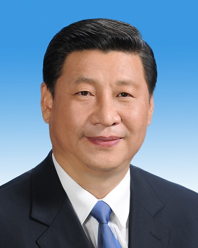
2018年党和国家机构改革后，除中共中央办公厅外，党中央设置组成机构16个。
国家监察委员会。
2018年3月，根据第十三届全国人民代表大会第一次会议批准的党和国家机构改革方案，将监察部、国家预防腐败局的职责，最高人民检察院查处贪污贿赂、失职渎职以及预防职务犯罪等反腐败相关职责整合，组建国家监察委员会，同中央纪律检查委员会合署办公，履行纪检、监察两项职责，实行一套工作机构、两个机关名称。
不再保留监察部、国家预防腐败局。
2018年3月，杨晓渡同志被任命为国家监察委员会主任。
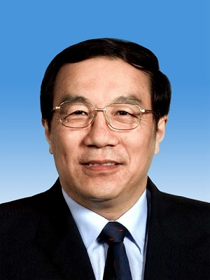
中共中央组织部
2018年3月，根据第十三届全国人民代表大会第一次会议批准的党和国家机构改革方案，调整优化中央机构编制委员会领导体制，作为党中央决策议事协调机构，统筹负责党和国家机构职能编制工作。中央机构编制委员会办公室作为中央机构编制委员会的办事机构，承担中央机构编制委员会日常工作，归由中央组织部管理。
将国家公务员局并入中央组织部。中央组织部对外保留国家公务员局牌子。不再保留单设的国家公务员局。
2017年10月，陈希同志被任命为中央组织部部长。
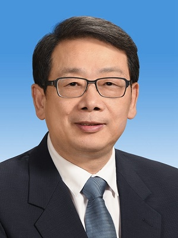
中共中央统战部
2018年3月，根据第十三届全国人民代表大会第一次会议批准的党和国家机构改革方案，将国家民族事务委员会归由中央统战部领导。国家民族事务委员会仍作为国务院组成部门。
将国家宗教事务局并入中央统战部。中央统战部对外保留国家宗教事务局牌子。不再保留单设的国家宗教事务局。
将国务院侨务办公室并入中央统战部。中央统战部对外保留国务院侨务办公室牌子。不再保留单设的国务院侨务办公室。
2017年，尤权同志被任命为中央统战部部长。
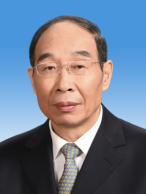
中共中央政法委员会
2018年3月，根据第十三届全国人民代表大会第一次会议批准的党和国家机构改革方案，不再设立中央社会治安综合治理委员会及其办公室，有关职责交由中央政法委员会承担。
不再设立中央维护稳定工作领导小组及其办公室，有关职责交由中央政法委员会承担。
将中央防范和处理邪教问题领导小组及其办公室职责划归中央政法委员会、公安部。
2018年3月，郭声琨同志被任命为中央政法委员会书记。
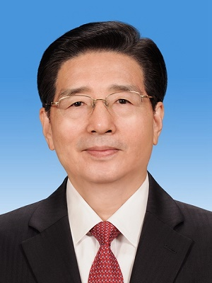
中共中央全面依法治国委员会
2018年3月，根据第十三届全国人民代表大会第一次会议批准的党和国家机构改革方案，组建中央全面依法治国委员会，负责全面依法治国的顶层设计、总体布局、统筹协调、整体推进、督促落实，作为党中央决策议事协调机构。
中央全面依法治国委员会办公室设在司法部。
中共中央全面深化改革委员会
2018年3月，根据第十三届全国人民代表大会第一次会议批准的党和国家机构改革方案，组建中共中央全面深化改革委员会，负责相关领域重大工作的顶层设计、总体布局、统筹协调、整体推进、督促落实。
办事机构为中央全面深化改革委员会办公室。
中共中央网络安全和信息化委员会
2018年3月，根据第十三届全国人民代表大会第一次会议批准的党和国家机构改革方案，组建中共中央网络安全和信息化委员会，负责相关领域重大工作的顶层设计、总体布局、统筹协调、整体推进、督促落实。
将国家计算机网络与信息安全管理中心由工业和信息化部管理调整为由中央网络安全和信息化委员会办公室管理。
办事机构为中央网络安全和信息化委员会办公室。
2016年6月，徐麟同志被任命为中央网络安全和信息化领导小组办公室主任。
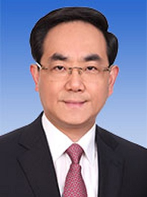
中共中央财经委员会
2018年3月，根据第十三届全国人民代表大会第一次会议批准的党和国家机构改革方案，组建中共中央财经委员会，负责相关领域重大工作的顶层设计、总体布局、统筹协调、整体推进、督促落实。
办事机构为中央财经委员会办公室。
中共中央和国家机关工作委员会
2018年3月，根据第十三届全国人民代表大会第一次会议批准的党和国家机构改革方案，将中央直属机关工作委员会和中央国家机关工作委员会的职责整合，组建中央和国家机关工作委员会，作为党中央派出机构。
不再保留中央直属机关工作委员会、中央国家机关工作委员会。
2018年3月，丁薛祥同志被任命为中央和国家机关工作委员会书记。
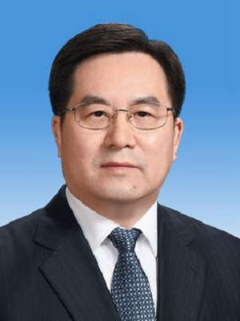
中共中央审计委员会
2018年3月，根据第十三届全国人民代表大会第一次会议批准的党和国家机构改革方案，组建中央审计委员会，作为党中央决策议事协调机构。
中央审计委员会办公室设在审计署。
中共中央宣传部
2018年3月，根据第十三届全国人民代表大会第一次会议批准的党和国家机构改革方案，将国家新闻出版广电总局的新闻出版管理职责划入中央宣传部。中央宣传部对外加挂国家新闻出版署（国家版权局）牌子。
将国家新闻出版广电总局的电影管理职责划入中央宣传部。中央宣传部对外加挂国家电影局牌子。
2017年，黄坤明被任命为中央宣传部部长。
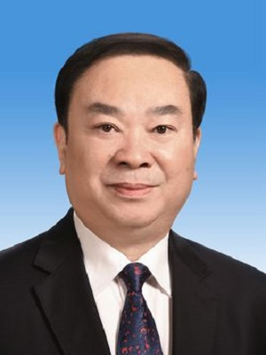
中共中央对外联络部
负责中国共产党对外工作的职能部门。1951年成立以来，中联部在党中央的直接领导下，围绕不同时期党的中心任务开展对外交往，工作领域不断拓展，工作内涵不断深化，为党的自身建设、改革开放和国家总体外交作出了积极贡献。
2015年11月，宋涛同志被任命为中央对外联络部部长。
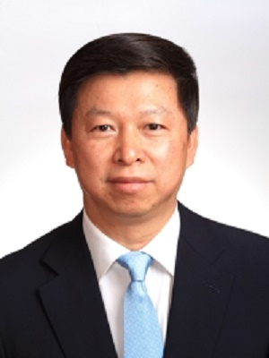
中共中央外事工作委员会
2018年3月，根据第十三届全国人民代表大会第一次会议批准的党和国家机构改革方案，组建中央外事工作委员会，负责相关领域重大工作的顶层设计、总体布局、统筹协调、整体推进、督促落实。
将维护海洋权益工作纳入中央外事工作全局中统一谋划、统一部署，不再设立中央维护海洋权益工作领导小组，有关职责交由中央外事工作委员会及其办公室承担，在中央外事工作委员会办公室内设维护海洋权益工作办公室。
办事机构为中央外事工作委员会办公室。
2018年3月，杨洁篪同志被任命为中央外事工作委员会主任。
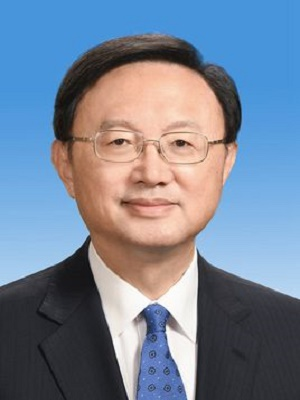
中共中央教育工作领导小组
2018年3月，根据第十三届全国人民代表大会第一次会议批准的党和国家机构改革方案，组建中央教育工作领导小组，作为党中央决策议事协调机构。
中央教育工作领导小组秘书组设在教育部。
中共中央政策研究室
专为中共中央研究政治理论、政策及草拟文件的直属机关。
2017年，王沪宁同志被任命为中央政策研究室主任。
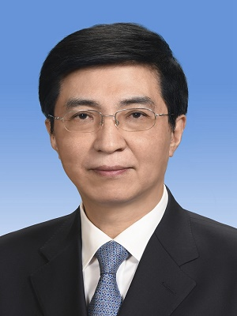
中央台湾工作办公室（国务院台湾事务办公室）
中国共产党中央委员会台湾工作办公室（中共中央台办），与中华人民共和国国务院台湾事务办公室（国务院台办），属于一个机构两块牌子，列入中共中央直属机构序列。
2018年3月，刘结一同志被任命为中共中央台办、国务院台办主任。
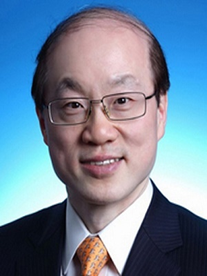